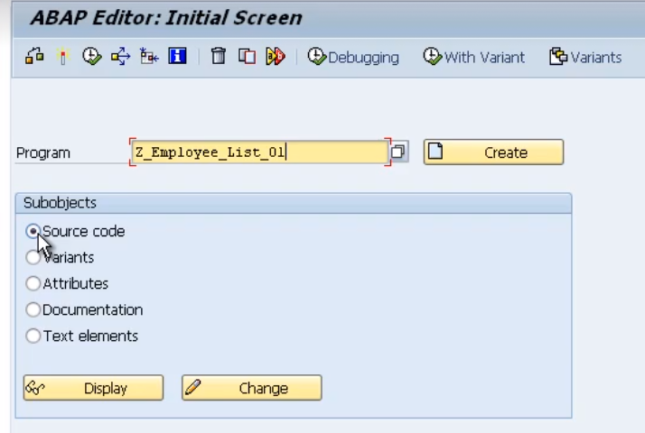

To create a program, first we need to go to the ABAP Editor.

Type the program name, ensure the source code radio button is checked, and press the create button.
Generally, your settings should like this when creating a test program.